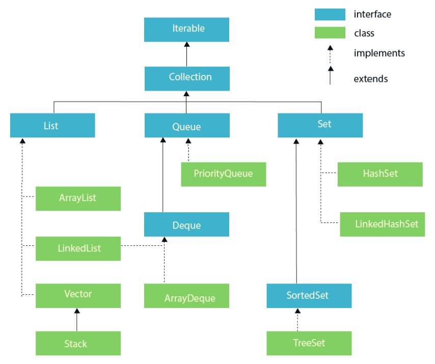

A Class is a template for objects An Object is an instance of a class
# To create a class
public class Main{
int a = 1;
}
# To create an object
Main obj = new Main();
# Access attributes
System.out.println(obj.a);
Special method Used to initialize objects It doesn't have return type
# To create a class
public class Main{
int a = 1;
# No Argument Constructor
public Main(){}
# Parameterized constructor
public Main(int value){
this.a = value;
}
}
Class Level public - accessible by any other class default - accessible by classes in the same package Attributes , methods, constructors Level
| default | private | protected | public | |
|---|---|---|---|---|
| same class | yes | yes | yes | yes |
| same package subclass | yes | no | yes | yes |
| same package non-subclass | yes | no | yes | yes |
| different package subclass | no | no | yes | yes |
| same package non-subclass | no | no | no | yes |
Class Level final - can't be inherited by other classes abstract - can't be used to create objects. to access, it must be inherited from another class. Attributes and methods final - can't be overidden/modified static - attributes and methods belongs to the class, rather than an object abstract - can be only used in an abstract class, can only be used on methods. this method does not have a body transient - attributes and methods are skipped when serializing the object containing them synchronized - method can only be accessed by one thread at a time volatile - the value of an attribute is not cached thread-locally , and is always read from the main memory
Make sensitive data hidden from users Increased security of data To achieve this... Declare class attributes as private provide public getter/setter
The composition is a design technique in java to implement a has-a relationship. Composition allows the reuse of code We have to favour Composition over Inheritance
# example
public class Job{
}
public class Person{
private Job job;
}
Inherit attributes and methods from one class to another use extends keyword
# Single
public class Job{}
public class Person extends Job{}
# Multi Level
public class Location{}
public class Job extends Location{}
public class Person extends Job{}
# Hierarchical Level
public class Job
public class User extends Job{}
public class Manager extends Job{}
The word “polymorphism” means having many forms. Static Binding (or Compile time) Polymorphism, e.g., Method Overloading Dynamic Binding (or Runtime) Polymorphism, e.g., Method overriding
# Method Overloading
public class MethodOverloading {
void view(int a){
System.out.println(a);
}
void view(int a,int b){
System.out.println(a+" "+b);
}
public static void main(String args[]){
MethodOverloading obj = new MethodOverloading();
obj.view(0);
obj.view(0, 0);
}
}
# Method Overriding
class Job {
void viewJob() {
System.out.println("None");
}
}
class Manager extends Job {
@Override
void viewJob() {
System.out.println("Manager");
}
}
class Programmer extends Job {
@Override
void viewJob() {
System.out.println("Programmer");
}
}
public class MethodOverriding {
public static void main(String args[]) {
Job manager = new Manager();
Job programmer = new Programmer();
manager.viewJob();
programmer.viewJob();
}
}
Defined as an abstract type, used to specify behaviour of a class. Blueprint of a class. It contains static constants and abstract methods Represent IS-A relationship
// A simple interface
interface In1 {
// public, static and final
final int a = 10;
// public and abstract
void display();
}
Object class is present in Java.lang Every class in Java is directly or indirectly derived from the Object class. Object class methods are
class Book implements Cloneable{
int bookId;
String bookName;
Book(int id, String name) {
this.bookId = id;
this.bookName = name;
}
@Override
public String toString() {
return "Book Id : " + this.bookId + " and Book Name : " + bookName;
}
@Override
protected Object clone() throws CloneNotSupportedException {
return super.clone();
}
@Override
public boolean equals(Object obj) {
if (obj == this)
return true;
if (!(obj instanceof Book))
return false;
Book getObj = (Book) obj;
if (this.bookId != getObj.bookId)
return false;
if (this.bookName.equals(getObj.bookName))
return false;
return true;
}
}
public class ObjectClassDemonstration {
public static void main(String args[]) throws CloneNotSupportedException {
Book book = new Book(1, "Sherlock Holmes");
System.out.println(book.toString());
System.out.println(book.hashCode());
System.out.println(book.getClass());
Book clonesbook = (Book) book.clone();
System.out.println(clonesbook.toString());
System.out.println(clonesbook.hashCode());
System.out.println(clonesbook.equals(book));
}
}
Runtime error handling mechanism.
Default Exception Handling: Whenever inside a method, if an exception has occurred, the method creates
an Object known as an Exception Object and hands it off to the run-time system(JVM). The exception
object contains the name and description of the exception and the current state of the program where the
exception has occurred. Creating the Exception Object and handling it in the run-time system is called
throwing an Exception. There might be a list of the methods that had been called to get to the method
where an exception occurred. This ordered list of the methods is called Call Stack
The run-time system searches the call stack to find the method that contains a block of code that can
handle the occurred exception. The block of the code is called an Exception handler
If the run-time system searches all the methods on the call stack and couldn’t have found the
appropriate handler, then the run-time system handover the Exception Object to the default exception
handler, which is part of the run-time system.
public class ExceptionHandling {
public static void main(String args[]) {
try {
System.out.println("try");
int a = 12 / 0;
} catch (Exception e) {
System.out.println(e);
} finally {
System.out.println("Finally");
}
}
}
class ExperienceNotSatisfiedException extends Exception {
int year;
public ExperienceNotSatisfiedException(int year) {
this.year = year;
}
public String toString() {
return "Experiece of " + year + " years , not appplicable for this post.";
}
}
public class UserDefinedExceptionsDemo {
void applyJob(int yearOfExperience) throws ExperienceNotSatisfiedException {
if (yearOfExperience < 3)
throw new ExperienceNotSatisfiedException(yearOfExperience);
}
public static void main(String args[]) throws CloneNotSupportedException, ExperienceNotSatisfiedException {
UserDefinedExceptionsDemo obj = new UserDefinedExceptionsDemo();
obj.applyJob(5);
obj.applyJob(1);
}
}
Wrapper class in java provides the mechanism to convert primitive data type into object is called boxing and object into primitive data type is called unboxing. Why?
| Primitive | Wrapper |
|---|---|
| char | Character |
| byte | Byte |
| short | Short |
| int | Integer |
| long | Long |
| float | Float |
| double | Double |
| boolean | Boolean |
Integer value = new Integer(13);
is a framework. provides an architecture to store and manipulate the group of objects. operations - search,sort,insert,delete,manipulation Interfaces - Set,List,Queue,Deque Classes - ArrayList,LinkedList,Vector,PriorityQueue,HashSet,LinkedHashSet,TreeSet java.util package contains all the classes and interfaces
Methods
import java.util.*;
class JavaCollectionDemo {
public static void main(String args[]) {
ArrayList<String> list = new ArrayList<String>();
list.add("abc");
list.add("abcb");
Iterator itr = list.iterator();
while (itr.hasNext()) {
System.out.println(itr.next());
}
}
}